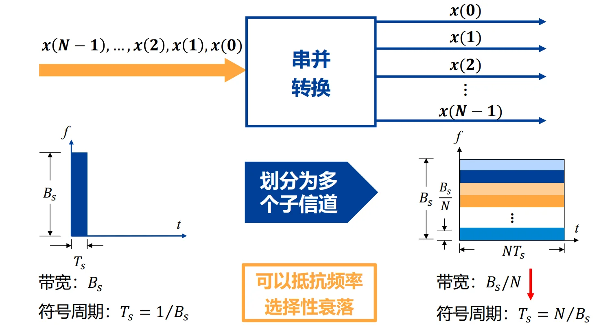
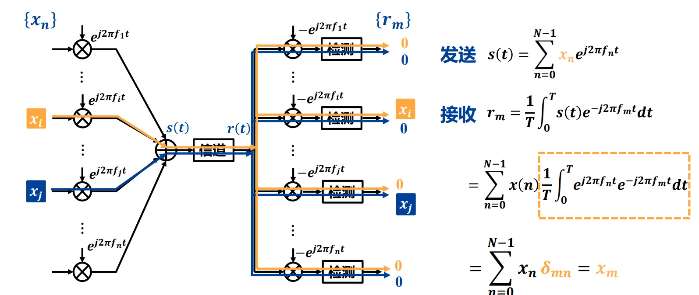
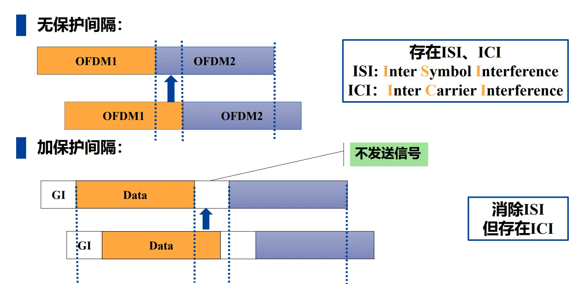
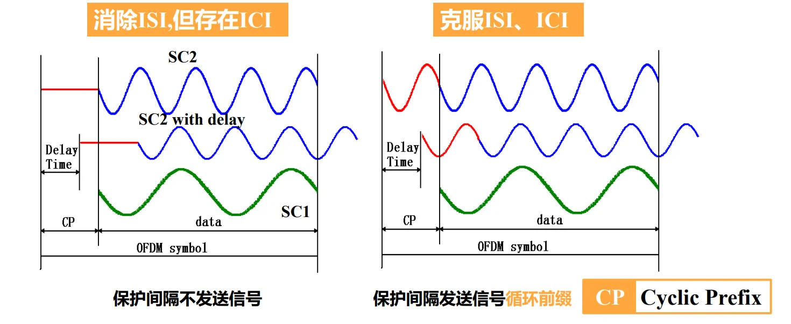
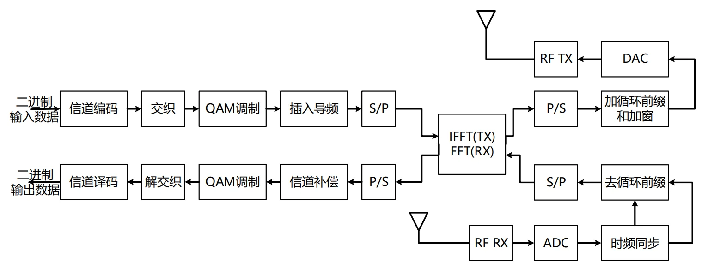

第十一章：OFDM 调制技术¶
I. 背景与核心痛点：为什么要用 OFDM？¶
1. 单载波调制在高速传输下的绝境
在传统单载波系统中，数据率越高，每个符号的持续时间 \(T_s\) 就越短，信号在频域上占用的带宽 \(B\) 就越宽（\(B \propto 1/T_s\)）。
- 致命问题（频率选择性衰落）： 当信号带宽大于无线信道的“相干带宽”时，信号的不同频率成分在空气中会经历完全不同的衰减。原本平整的方块信号到了接收端会被扭曲得面目全非，导致严重的码间串扰 (ISI)。
2. 破局思路：串并转换 (分而治之)
既然一条宽马路容易发生连环车祸，我们就把它分成多条窄车道。
- 方法： 将高速数据流通过串并转换，分配到 \(N\) 个并行的子信道上。
- 效果： 每个子信道的数据速率降低为原来的 \(1/N\)，符号周期变长为 \(N \cdot T_s\)。带宽变窄后，每个子信道内的衰落就变成了平坦衰落，完美解决了频率选择性衰落问题！

II. OFDM 的基本原理：如何优雅地排布子信道？¶
如果用传统的频分复用（FDM，比如老式收音机），为了防止各个子信道互相干扰，必须在它们之间留出很宽的“保护频带”，这极其浪费频谱资源。OFDM 的伟大之处在于引入了 “正交性 (Orthogonality)”。
2.1 子载波的正交性数学证明¶
OFDM 让所有子载波的频谱互相重叠，但又能在接收端被完美分离。
假设有两个子载波频率分别为 \(f_n\) 和 \(f_m\)，我们在一个符号周期 \(T\) 内对它们求内积（相乘并积分）：
💡【正交的核心条件】：
要让上述积分在 \(n \neq m\) 时绝对等于 0，两个子载波的频率间隔 \(\Delta f\) 必须满足：
- 直观物理意义： 在一个周期 \(T\) 内，任意两个子载波包含的“完整正弦波周期数”刚好差一个整数。把它们乘在一起，正半轴的面积和负半轴的面积刚好完全抵消！
2.2 时域与频域的叠加魔法¶
发送端叠加（时域）：
这里 \(x_n\) 是经过 QAM 或 PSK 映射后的复数电平。所有子载波在时域上直接相加，最后变成一个看起来毫无规律的杂乱波形 \(s(t)\)。
接收端分离（频域无混叠）：

当接收机想提取第 \(m\) 个子载波上的信息 \(x_m\) 时，只需要把收到的 \(s(t)\) 乘以 \(e^{-j2\pi f_m t}\) 并积分。因为正交性，其他所有子载波的积分全部变成了 0，犹如幽灵般隐形了！ 只剩下 \(x_m\) 本身。
在频谱图上观察：每一个子载波的频谱都是一个 Sinc 函数，神奇的是，当某个子载波达到峰值时，其他所有子载波的频谱恰好穿过 0 点。
III. 循环前缀 (CP)：对抗多径效应的终极武器¶
这是 OFDM 最核心、最难懂，也是最精妙的设计。
无线信号在城市里传播时，会经过高楼反射形成多径效应。这意味着接收端会收到很多个“迟到”的信号副本。
- ISI (符号间干扰): 上一个符号的迟到尾巴，拖到了当前符号的时间里。
- ICI (子载波间干扰): 多径导致正弦波发生时移，破坏了整数个周期的完美对齐条件，正交性被毁灭。
3.1 为什么普通的“保护间隔(GI)”不行？¶

- 解决 ISI： 迟到的尾巴落在了空白区，不影响下一个符号。ISI 消除了。
- ICI 依然存在： FFT 接收窗口必须截取长度为 \(T\) 的波形来积分。由于波形是延迟的，FFT 窗口截取到的将不是完整的正弦波周期，在做傅里叶变换时会导致严重的频谱泄露（正交性丧失）。
3.2 循环前缀 (Cyclic Prefix, CP) 的诞生¶

通信学家想出了一个天才的办法：不留空白，而是把 OFDM 符号最后面的那一段波形，像剪切板一样复制，粘贴到最前面！
💡【为什么 CP 能同时消灭 ISI 和 ICI？】
- 吸收多径时延 (抗 ISI)： 只要信道的最大多径时延 \(\tau_{max}\) 小于 CP 的长度 \(T_g\)，上一个符号的尾巴最多只会冲进当前符号的 CP 区域。我们接收时，直接把 CP 扔掉不处理，截取后面的有效部分，完全没有 ISI！
- 维持正交性 (抗 ICI，极其精妙)：
正弦波具有周期性。把尾巴复制到前面，意味着这部分波形在时间上是连续且周期循环的。
当多径信号发生延迟时，对于接收机的 FFT 截取窗口来说，看起来就像是这个信号在窗口内做了一次“圆周移位 (Circular Shift)”！
在傅里叶变换中，时域的圆周移位只等价于频域的相位旋转（乘上一个相位因子 \(e^{j\theta}\)），绝不会破坏波形的频率成分，因此完全保住了子载波的正交性（无 ICI）！
3.3 代价与效率¶
加入了 CP 虽然保证了信号的无暇，但占用了传输时间。
- 传输效率 = \(\frac{T}{T + T_g}\) （其中 \(T\) 为有用符号长度，\(T_g\) 为 CP 长度）。
- 系统设计时，通常让 CP 的长度等于信道根均方时延的 2-4 倍；让符号总长度 \(T\) 是 CP 长度的 5 倍左右，以平衡抗干扰能力与传输效率。
IV. OFDM 的高效实现：IFFT 与 FFT 的降维打击¶
这是 OFDM 从“理论模型”走向“现实商用”的决定性一步。如果用传统的模拟电路，实现 1000 个子载波的正交调制需要 1000 个独立的振荡器和乘法器，体积和成本根本无法接受。
4.1 数学映射公式证明¶
让我们重写 OFDM 发射端的连续时间公式：
现在，我们将信号进行数字离散化抽样：
- 令 \(f_k = k \Delta f = \frac{k}{N T_s}\) （\(N\)为子载波数，\(T_s\)为抽样间隔，总时长 \(T = N T_s\)）
- 令离散时间 \(t = n T_s\) （\(n\) 表示第 \(n\) 个离散采样点）
把这两个参数代入上面的连续公式：
奇迹出现了！
等式最右边 \(\sum b_k e^{j2\pi \frac{n k}{N}}\)，在数学格式上，百分之百等同于离散傅里叶反变换 (IDFT) 的定义式！
4.2 工程意义（复杂度的断崖式下降）¶
- 发送端： 硬件只需收集 \(N\) 个 QAM 调制的复数信号 \(b_k\)（频域信号），直接扔进一个计算 快速傅里叶反变换 (IFFT) 的数字芯片，吐出来的离散序列直接通过 DAC (数模转换器) 发送出去。根本不需要任何物理的压控振荡器去生成几百个正弦波！
- 接收端： 收到时域信号后通过 ADC 采样，扔进计算 快速傅里叶变换 (FFT) 的芯片，出来的直接就是原本的 \(b_k\)（解调出了各个子载波上的 QAM 星座点）。
- 复杂度： 利用 FFT 算法，计算复杂度从 \(O(N^2)\) 断崖式下降到 \(O(N \log N)\)，使得搭载几千个子载波的 Wi-Fi 芯片能轻易集成在你的手机里。
V. OFDM 系统设计总结与优缺点¶

完整的物理层流程总结：二进制数据 \(\rightarrow\) 信道编码/交织 \(\rightarrow\) QAM映射 \(\rightarrow\) 插入导频(用于信道估计) \(\rightarrow\) IFFT (核心) \(\rightarrow\) 插入 CP \(\rightarrow\) D/A \(\rightarrow\) 射频发射。
5.1 OFDM 的核心优势¶
- 极大提高频谱效率： 正交子载波互相重叠，逼近理论极限。
- 抗频率选择性衰落极强： 宽带化为窄带，结合信道编码能完美恢复受损信道。
- 抗多径干扰 (ISI/ICI)： CP 的引入完美化解了无线通信最大的痛点。
- 硬件实现简单： 依托于成熟强大的 DSP/FPGA 进行 FFT 运算。
5.2 OFDM 的阿喀琉斯之踵 (致命缺点)¶
- 频偏 (CFO) 影响： 如果发射机和接收机的晶振有偏差，或者因为终端高速移动产生了多普勒频移，接收端的频率网格就会整体产生偏移。这会导致本该在积分时变成 0 的其他子载波，产生残留值（能量泄露）。正交性一旦破裂，ICI 就会像雪崩一样出现，误码率急剧上升。
- 这也是为什么高铁上 Wi-Fi 和 4G 信号容易不稳定的重要物理原因之一（多普勒频偏破坏了 OFDM 的正交性）。
OFDM 调制与解调的流程演示：OFDM-Example